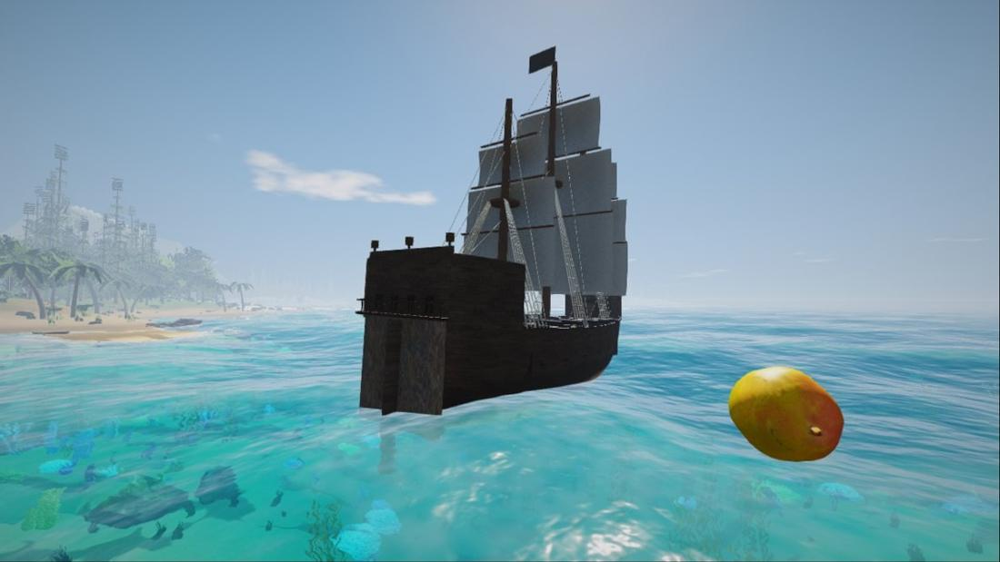
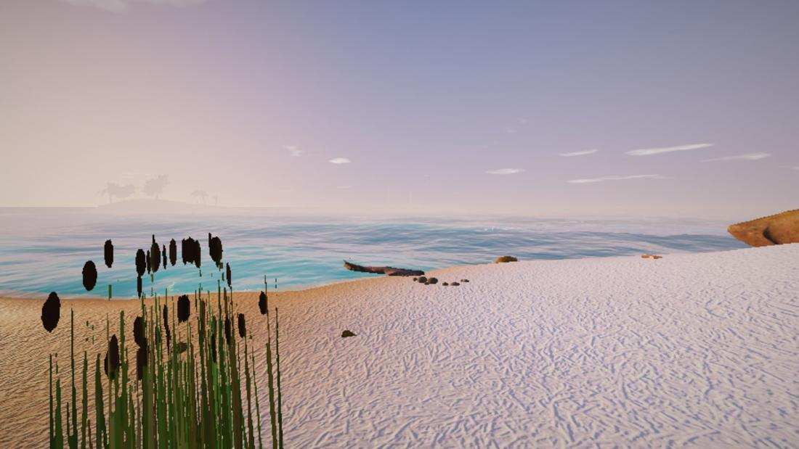
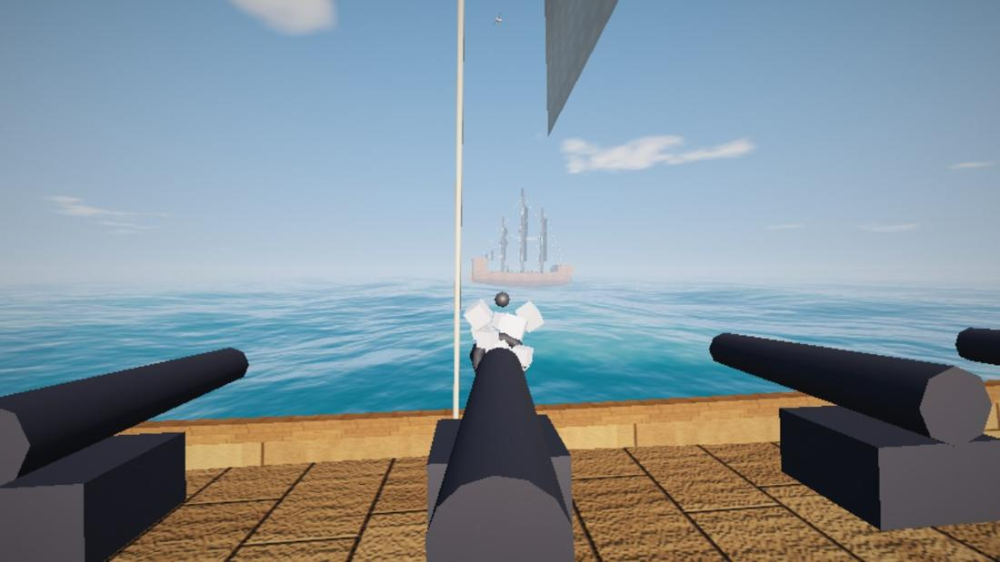
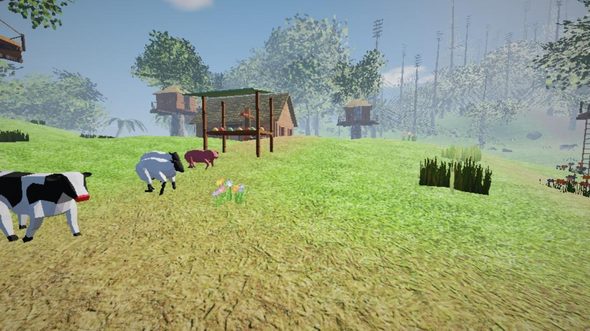
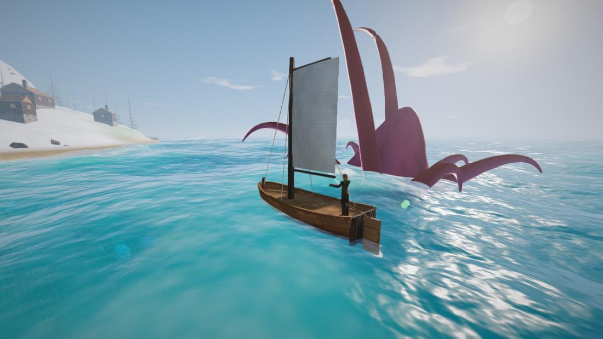
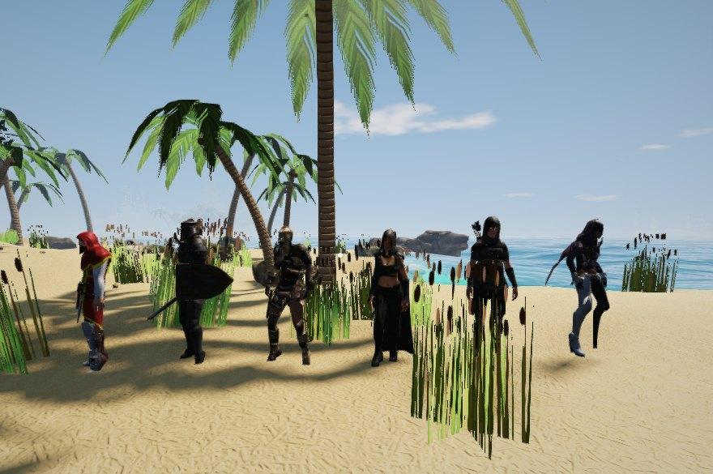

Il gioco
Il mare da attraversare
Dalla zattera al vascello a due ponti: ogni barca si costruisce pezzo per pezzo, si governa al timone e si arma di cannoni.
Isole tutte diverse
Giungle, deserti, isole di neve, vulcani, grotte con i minerali, villaggi, castelli sulle montagne, covi di pirati e relitti sul fondo.
Costruisci e sopravvivi
Fame, sete e temperatura; caccia, pesca e cucina; case di legno e pietra, fornaci, campi, cavalli da domare.






Prossimamente
Cosa arriverà nei prossimi aggiornamenti.
- Caricamento…
Proposte e segnalazioni
Hai un’idea per Deriva o hai trovato un problema? Scrivilo qui: ogni messaggio viene letto.
Come si installa
- Premi Scarica per Windows e apri il file zip.
- Estrai la cartella Deriva dove vuoi, per esempio sul Desktop.
- Apri Deriva.exe. Per le versioni nuove basta il pulsante Controlla aggiornamento nel menu del gioco.